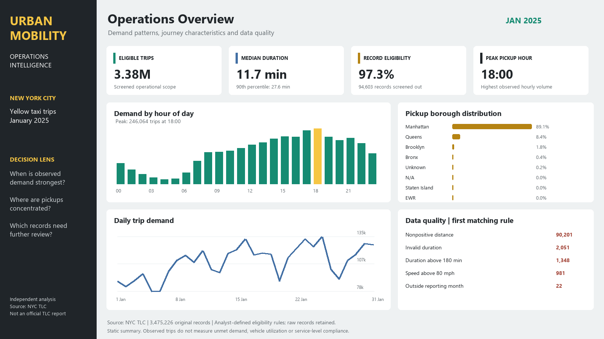

VIEW FULL IMAGE ↗01SQL · Python · Power BI
Urban Mobility
Operations
Understanding taxi trip patterns in New York, with a clear boundary between source records and analysis-ready journeys.
3.48Msource records
97.28%within analysis scope
Focus: SQL aggregation, ordered quality rules and traceable exclusions.
NYC TLC · January 2025